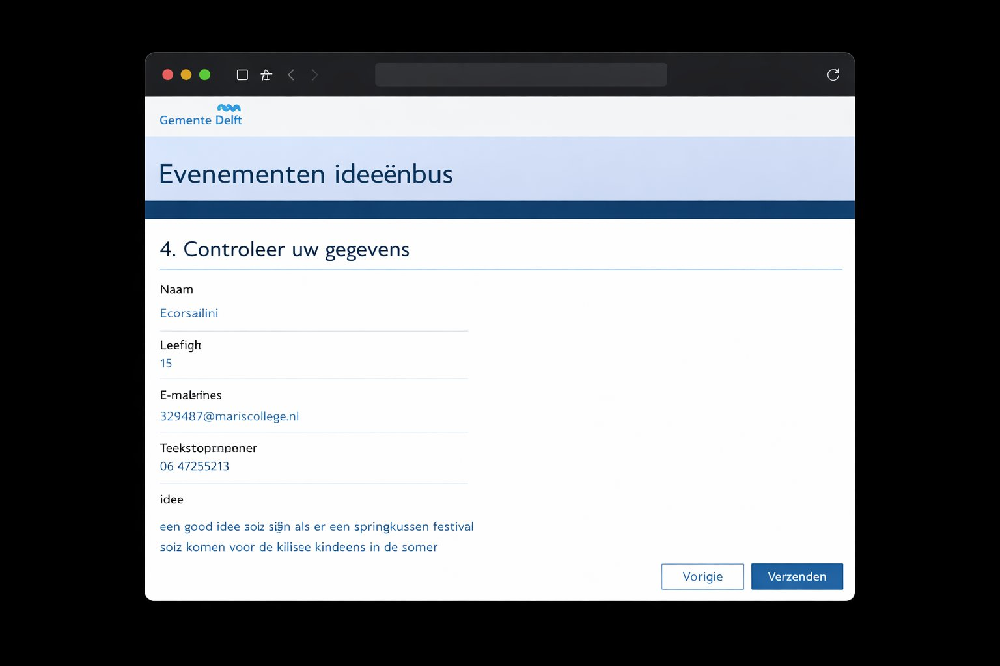
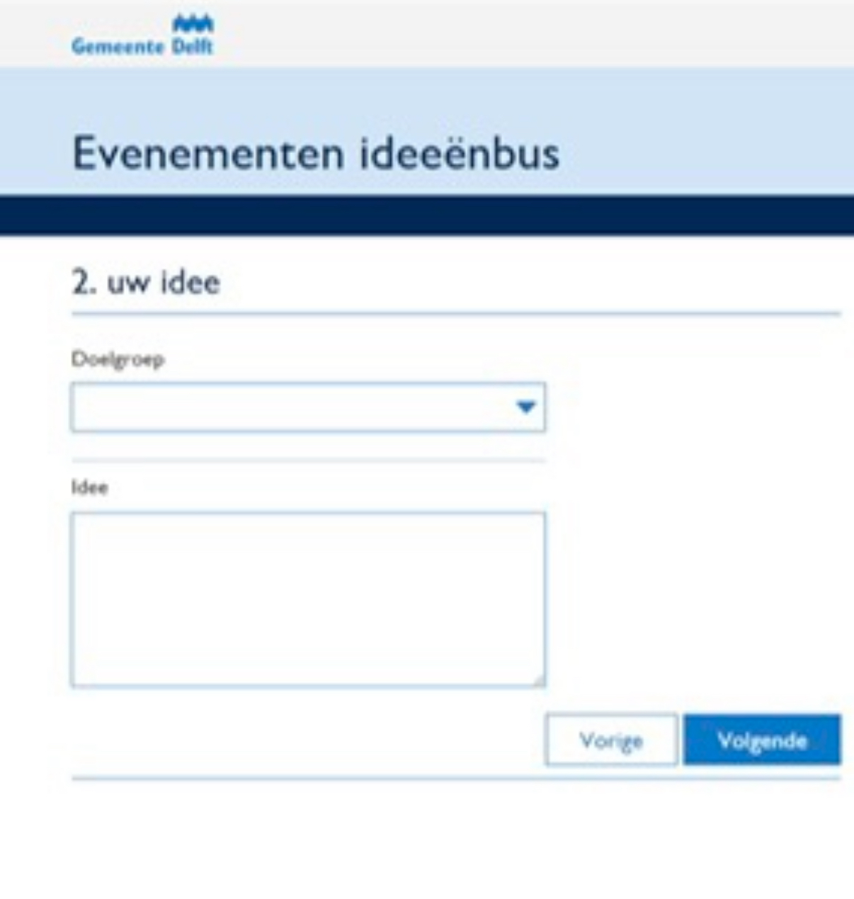
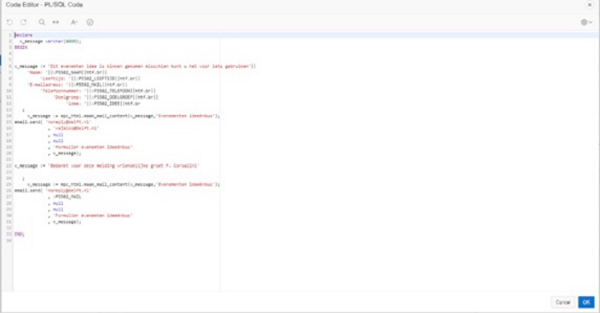
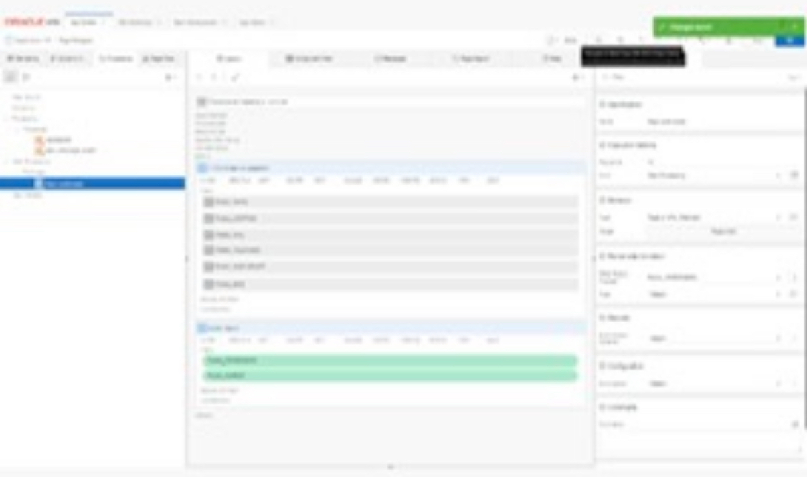

I was 15 when I built this. During my internship at the Municipality of Delft I got one assignment: build a platform where young people could vote on and submit ideas for local events made for them. I wrote the project plan, designed the UI, built the whole thing in Oracle APEX, wrote PL/SQL for the email logic, and launched it. Oh — and I got to interview the mayor. Yes, really.

The platform is called the Evenementen ideeënbus — an event ideas mailbox for young people in Delft. Users fill in a multi-step form: their idea, their details, and a confirmation screen before submitting. When someone submits, two automatic emails get sent — one to the municipality, one back to the user as confirmation. I wrote that email logic myself in PL/SQL.
Young people fill in a multi-step form. Name, age, email, target group, and their event idea.

Before submitting, users see a summary of everything they filled in. Name, age, contact info, and their idea — all in one overview.
On submit, two emails fire automatically. One goes to the municipality. One goes back to the user. I wrote the entire email flow in PL/SQL inside Oracle APEX.

The backend — PL/SQL email logic I wrote myself.
Step 2: Your idea
Step 4: Review details

Blurred for privacy — this is the Oracle APEX builder.
Part of the project was interviewing the mayor of Delft to understand what kinds of youth events the city actually wanted. Not many 15-year-olds get that meeting.